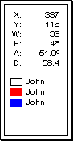
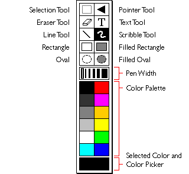
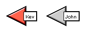
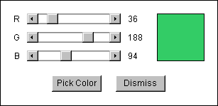

When you open the whiteboard, you'll see a panel full of drawing tools and colors that you can use. To select a tool, click once on a tool icon in the panel. To select the width of the pen you wish to draw with, select a line in the pen width selection area (the small set of vertical lines). To select a color, click once on a colored square. The large square at the bottom of the panel indicates the color that you are currently using. Clicking once on this large square opens a new color picker window in which you can choose a custom color (other than the twelve colors that are in the tool panel).
You can drag the tool panel around by holding your mouse button down on the border surrounding the panel and dragging. You can also hide and show this panel by selecting the "Tool Panel" option from the "Panels" menu.

You can also show and hide a status panel by selecting the "Status Panel" option from the "Panels" menu. This panel gives you coordinate information and information about the object you are drawing. If other people draw things on the whiteboard, their nickname and the color they are drawing in will appear in the bottom half of the status panel. The status panel can be moved around the screen the same way the tool panel can.
After moving the panels around you may wish to reset their positions. You can do so by selecting the "Reset Panel Locations" from the "Panels" menu.
You can resize the whiteboard the same way you resize other windows in your operating system. The size of the drawing canvas is only limited by the available memory in your computer - there is no fixed limit.
To close the whiteboard, select "Close" from the "File" menu.
Using the EwgieBoard Tools

- The Selection Tool
The selection tool allows you to move, cut, copy, and paste graphics in the whiteboard.
To select an area, click on the selection tool icon, hold the mouse button down anywhere on the drawing area, and, still holding the mouse button down, drag the mouse. You'll find that a little rectangle is drawn as you drag the mouse - this represents the area you will select. Release the mouse to define the selection area and copy what you've selected.
By clicking and dragging the selected area you'll find that you can move graphics that you've drawn to different places. Click anywhere outside the selected area or choose another tool to deselect the selection.
To copy an area, select a region, hold the control key down, and then click and drag the selected area while still holding the control key down. You can also copy an area by selecting a region and choosing "Paste" from the "Edit" menu.
To cut an area, select a region and press the backspace or delete key, or select "Cut" from the "Edit" menu. To clear the entire whiteboard, select "Clear Board" from the "Edit" menu.
While selecting an area, you can hold the shift key down to select square areas. While selecting you can also hold down the control key to draw the selection rectangle from its center, rather than from a corner.
After you've selected an area, you can use the arrow keys to move an area up, down, left, and right by one pixel. To move an area in a straight line horizontally or vertically, hold down the shift key and then click and drag on the area.
You can flip and rotate an area by selecting it and then choosing one of the appropriate options from the "Image" menu.
- The Pointer Tool
The pointer tool can be used to point out things to others. To use it, select this tool's icon. You will see a red arrow appear with your nickname beside it. Others will see a gray arrow with your name appear. To move your pointer, click and drag it - others will not see the new location you have moved your pointer to until you release the mouse button after dragging the pointer. Selecting the pointer tool icon in the tool panel toggles your pointer on and off.

- The Eraser Tool
Using this tool erases things that were previously drawn. If you wish to clear the entire whiteboard, select "Clear Board" from the "Edit" menu.
- The Text Tool
Use the text tool to draw text on the whiteboard using the currently selected color. Select the text tool, click anywhere on the drawing area, and start typing. Pressing the return key will take you to the next line. You will not be able to use the delete or backspace key.
You can select the font, size, and font style to draw in by selecting the appropriate options from the "Font" menu.
- The Line Tool
This tool allows you to draw lines using the pen width and color that you've selected. To draw a line, hold the mouse button down on the point you wish to start at, and white still holding the mouse button down, drag the mouse. Where you release the mouse button is the end point of the line.
To draw a line from its center, hold down the control key while drawing the line. To draw a line constrained by increments of 45 degrees, hold down the shift key while drawing the line. You can use both of these keys at once.
- The Scribble Tool
The scribble tool draws scribbles using the current pen width and color. Simply click and drag the mouse on the drawing area to make scribbles.
To draw a horizontal or vertical line, hold down the shift key and keep it held down while drawing. To draw a line from the last scribble point you drew from, hold down the shift key and click once on the drawing area.
- The Rectangle Tools
These tools will allow you to draw filled and hollow squares and rectangles. To draw, click and drag the mouse on the drawing area.
To draw a rectangle from its center, hold down the control key while drawing. To draw a square, hold down the shift key while drawing. You can use both of these keys at once.
- The Oval Tools
These tools will allow you to draw filled and hollow circles and ovals using the currently selected pen width and color. To draw, click and drag the mouse on the drawing area.
To draw an oval from its center, hold down the control key while drawing. To draw a perfect circle, hold down the shift key while drawing. You can use both of these keys at once.
The Color Picker
You can select a custom color to use by using the whiteboard's color picker. Launch the picker by clicking once on the large square at the bottom of the tool panel. You can slide any of the scrollbars to change the red, green, or blue components of the color, which is displayed in a square to the right. Click on this square or select the "Pick Color" button to set the board's current color to this color.

Loading Images
Because of the security restrictions that applets have, you may not be able to load a graphic image into the whiteboard directly from your computer. You can, however, load an image if it is accessible via the World-Wide Web with a URL.
To load an image from a URL, select "Load image from URL..." from the "File" menu. A dialog will appear - you should enter the full URL to a image in GIF or JPEG format (the URL should start with "http://"). After typing in the URL, press the return key or select the "Load" button in the dialog.
To load an image from a file, select "Load image from file..." from the "File" menu (this menu item will not appear if you are running the client as an applet). A dialog will appear in which you can select a GIF or JPEG image.
If the image cannot be retrieved or is in a format that cannot be read, a dialog will appear telling you so. If the image is loaded successfully, a selection rectangle which has the same dimensions of the image will appear. You can move this rectangle to where you want to place the image on the whiteboard. When you're satisfied with the location, click once anywhere outside of the rectangle - the image will then be transmitted to everyone that has their whiteboard open.
Saving Images
If you are running Ewgie as a standalone application, you can save the whiteboard image to your computer as a GIF file. Select "Save image to GIF file..." from the "File" menu - a dialog will appear in which you can enter a filename to save the board image as and select where to save the file.
|